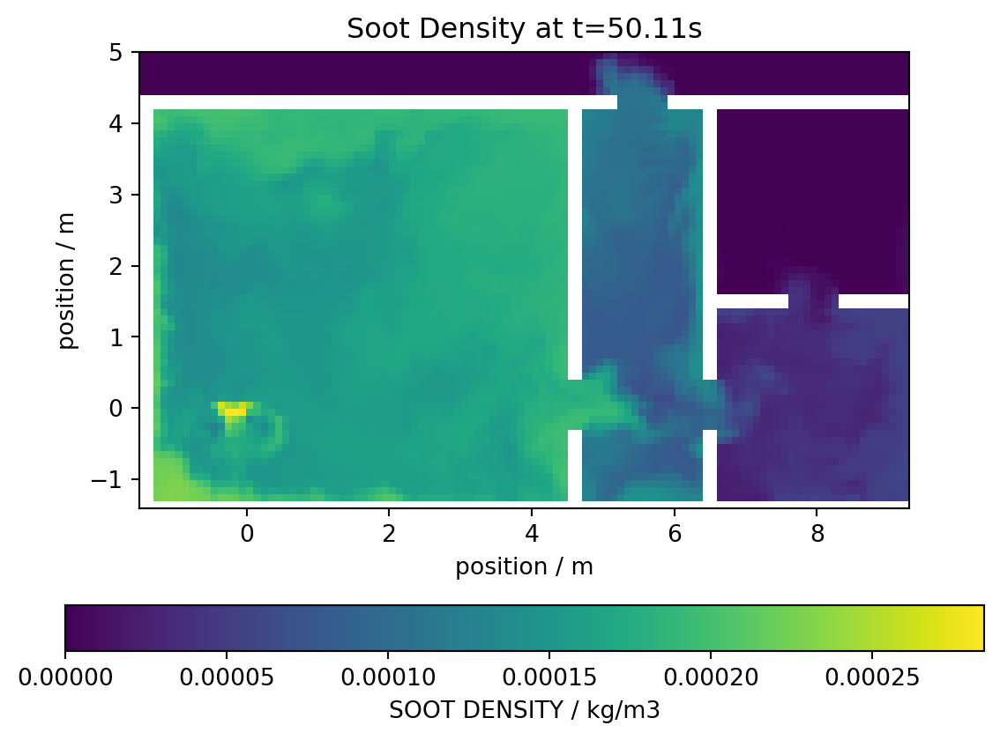
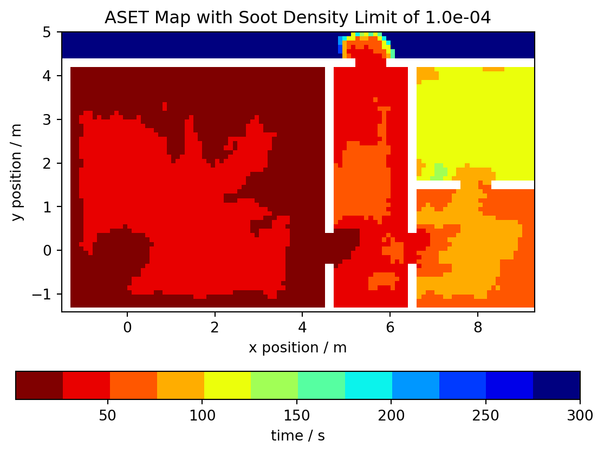
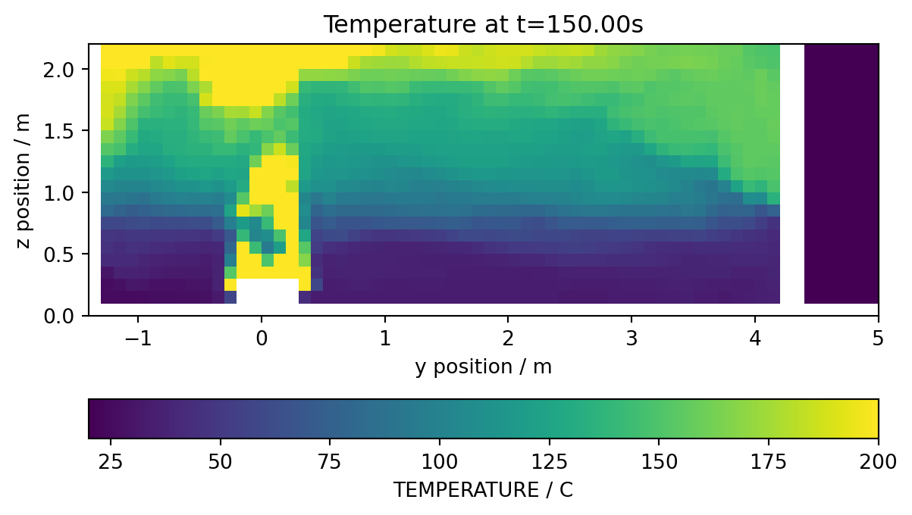
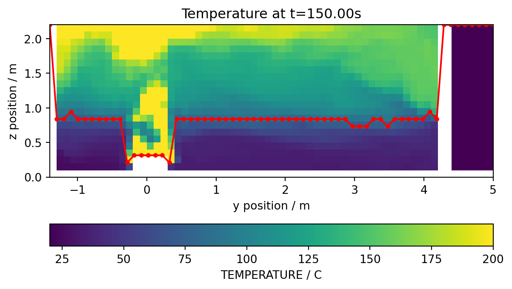
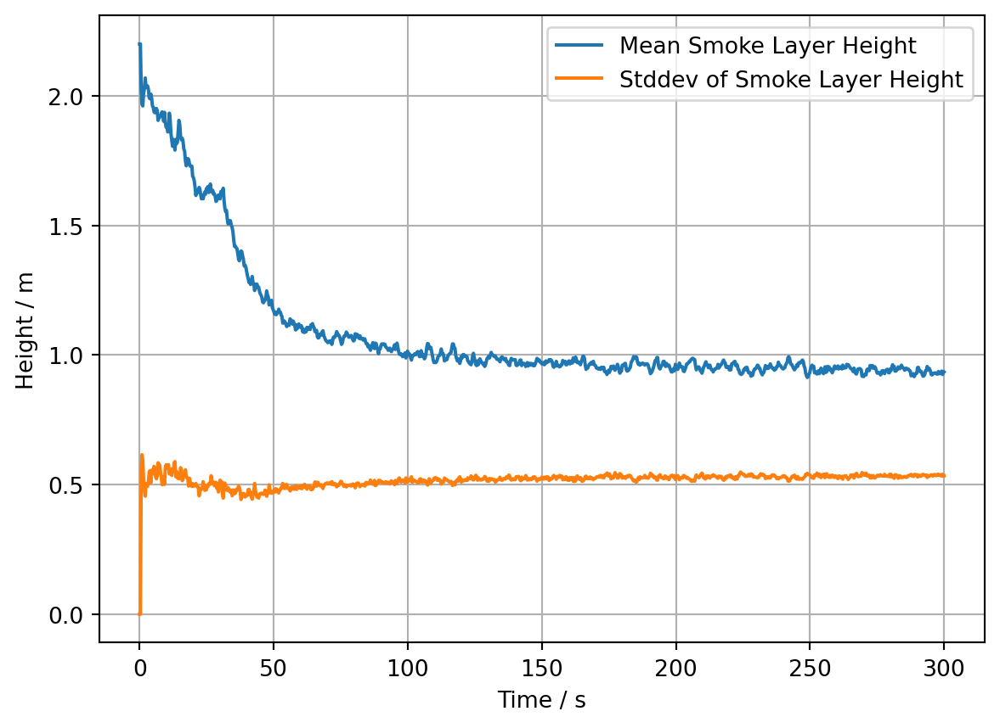
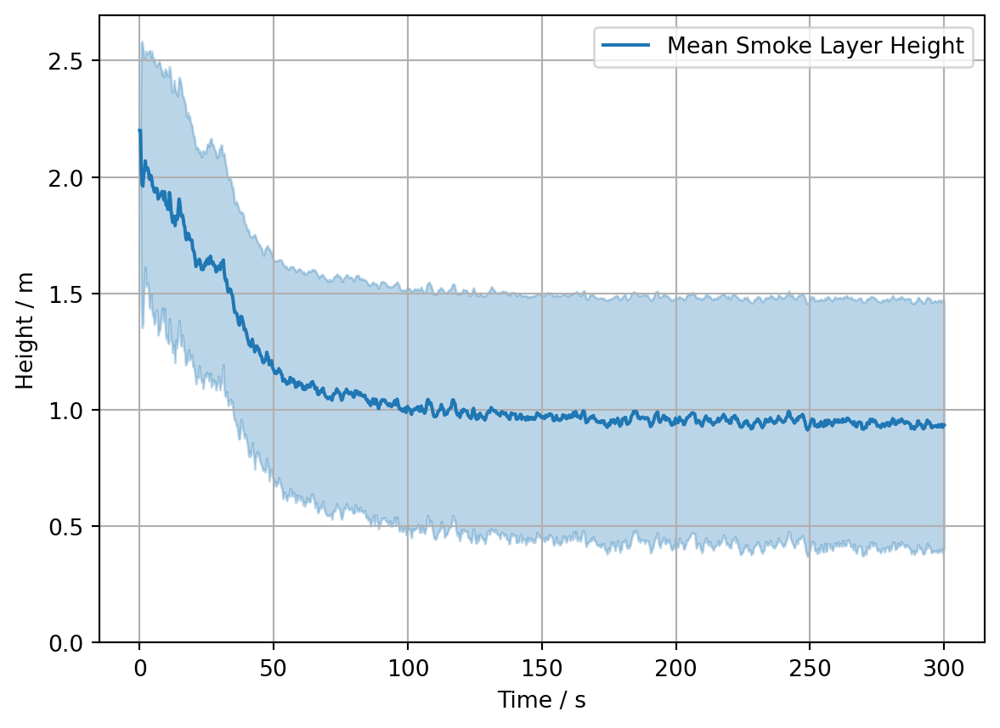
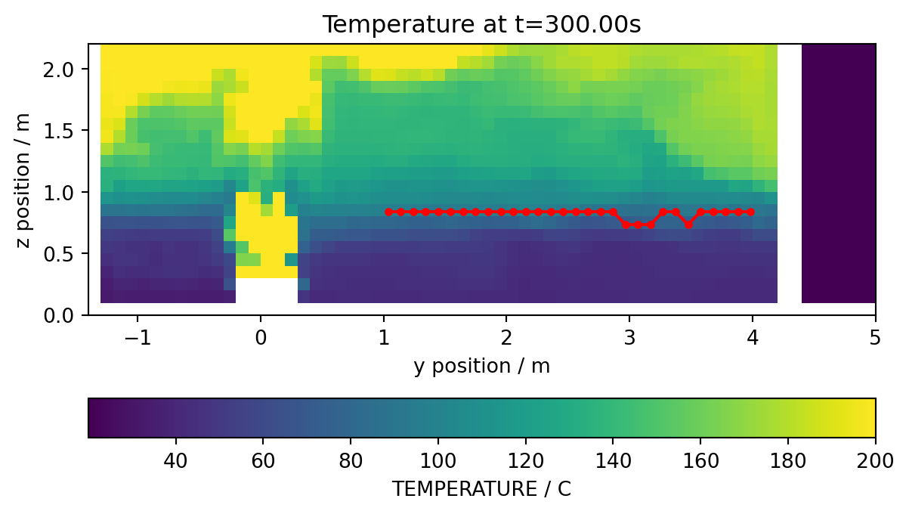
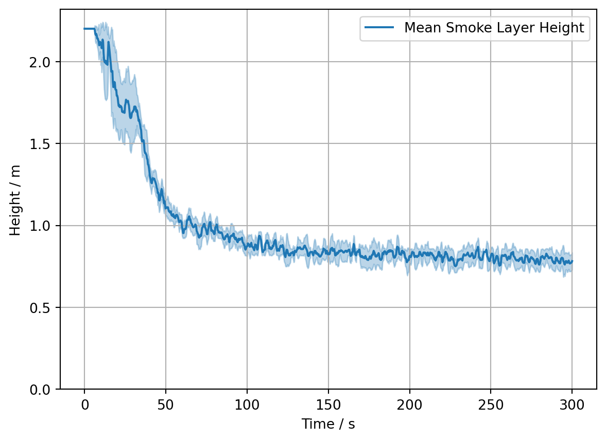

import fdsreader
import matplotlib.pyplot as plt
import numpy as np3 Available safe egress time
This example demonstrates an analysis of slice data, here to determine the map of available safe egress time (ASET) and the temporal evolution of the smoke layer height. The used scenario is a multi-room appartment.
path_to_data = '../skript/01-data/apartment_01'
sim = fdsreader.Simulation(path_to_data)
print(sim)Simulation(chid=Appartment,
meshes=8,
obstructions=23,
slices=20,
data_3d=5,
smoke_3d=3)# get the soot density slice, normal to z at 1.5m height
slc = sim.slices.get_by_id('SootDensityZ_1.5m')
# as the simulation is based on multiple meshes, a global
# data structure is created, walls are represented as
# non-valid data points, i.e. nan
slc_data = slc.to_global(masked=True, fill=np.nan)First, a visualisation of the data at a selected point is done with the imshow function.
# find the time index
it = slc.get_nearest_timestep(50)
# visualise the data
plt.imshow(slc_data[it,:,:].T, origin='lower', extent=slc.extent.as_list())
# add labels
plt.title(f'Soot Density at t={slc.times[it]:.2f}s')
plt.xlabel('position / m')
plt.ylabel('position / m')
plt.colorbar(orientation='horizontal', label=f'{slc.quantity.name} / {slc.quantity.unit}' )
Now, the local ASET values are computed:
- Iterate over all spatial elements of the slice
- Determine all points in time which exceed the tenability threshold
- f this happens at any time, set the first time to be the local ASET value
# set arbitrary values as tenability threshold
soot_density_limit = 1e-4
# create a map with max ASET as default value
aset_map = np.full_like(slc_data[0], slc.times[-1])
# set walls to nan
aset_map[np.isnan(slc_data[0,:,:])] = np.nan
# 1D loop over all array indices, ix is a two dimensional index
for ix in np.ndindex(aset_map.shape):
# find spatialy local values which exceed the given limit
local_aset = np.where(slc_data[:, ix[0], ix[1]] > soot_density_limit)[0]
# if any value exists
if len(local_aset) > 0:
# use the first, i.e. first in time, as the local ASET value
aset_map[ix] = slc.times[local_aset[0]]With the computed map, a graphical respresentation of the ASET map is done the same way as with the other quantities. Here, a discrete color map is used.
# create a discrete (12 values) color map
# cmap = matplotlib.cm.get_cmap('jet_r', 12)
cmap = plt.cm.get_cmap('jet_r', 12)
# visualise the data
plt.imshow(aset_map.T, origin='lower', extent=slc.extent.as_list(), cmap=cmap)
plt.title(f'ASET Map with Soot Density Limit of {soot_density_limit:.1e}')
plt.xlabel('x position / m')
plt.ylabel('y position / m')
plt.colorbar(orientation='horizontal', label='time / s' );
# save output to file
#plt.savefig('figs/appartment_aset_map.svg', bbox_inches='tight')
# plt.close()/var/folders/p_/ks3trxjx0jd839_g4g0vm4nc0000gn/T/ipykernel_95921/3953631812.py:3: MatplotlibDeprecationWarning: The get_cmap function was deprecated in Matplotlib 3.7 and will be removed in 3.11. Use ``matplotlib.colormaps[name]`` or ``matplotlib.colormaps.get_cmap()`` or ``pyplot.get_cmap()`` instead.
cmap = plt.cm.get_cmap('jet_r', 12)
3.1 Smoke layer
In this example, the smoke layer height is analysed. The distinction made here is based on a simple threshold in temperature: The local smoke layer height is given by the lowest point above a given temperature. The evaluation is done based on a slice across the burner and normal to the x-direction.
# find the slice
slc = sim.slices.get_by_id('BurnerTempX')
# convert it to a global data structure and get the coordinates
slc_data, slc_coords = slc.to_global(masked=True, fill=np.nan, return_coordinates=True)First, the data at a arbitrary point in time is visualsied. The white parts represent the obsticles.
# pick a time index
it = slc.get_nearest_timestep(150)
# visualise the data
plt.imshow(slc_data[it,:,:].T, origin='lower', vmax=200, extent=slc.extent.as_list())
plt.title(f'Temperature at t={slc.times[it]:.2f}s')
plt.xlabel('y position / m')
plt.ylabel('z position / m')
plt.colorbar(orientation='horizontal', label=f'{slc.quantity.name} / {slc.quantity.unit}' )
# save output to file
#plt.savefig('figs/appartment_temp_slice.svg', bbox_inches='tight')
# plt.close()
Now, for each y-position the z-indices are found, where the temperature exceedes the limit temperature. The lowest value is the smoke layer height at the y-position.
# set temperature limit
temperature_limit = 75
# create a data array to store the local height values, default
# is the maximal z-coordinate
layer_height = np.full(slc_data.shape[1], slc_coords['z'][-1])
# loop over all indices
for ix in range(len(layer_height)):
# find indices which exceed the limit
lt = np.where(slc_data[it, ix, :] > temperature_limit)[0]
# if there are any, pick the lowest one
if len(lt) > 0:
layer_height[ix] = slc_coords['z'][lt[0]]The resulting values can now be plotted over the slice file, to check for plausibility.
# slice data
plt.imshow(slc_data[it,:,:].T, origin='lower', vmax=200, extent=slc.extent.as_list())
plt.title(f'Temperature at t={slc.times[it]:.2f}s')
plt.xlabel('y position / m')
plt.ylabel('z position / m')
plt.colorbar(orientation='horizontal', label=f'{slc.quantity.name} / {slc.quantity.unit}' );
# smoke layer height
plt.plot(slc_coords['y'], layer_height, '.-', color='red')
# save output to file
#plt.savefig('figs/appartment_temp_slice_height.svg', bbox_inches='tight')
# plt.close()
Using the above approach for a single point in time, a loop over all times can be used to compute, e.g., the mean and standard deviation of the smoke layer height.
layer_mean = np.zeros_like(slc.times)
layer_stddev = np.zeros_like(slc.times)
res = np.zeros(slc_data.shape[1])
for it in range(len(slc.times)):
res[:] = slc_coords['z'][-1]
for ix in range(len(res)):
lt = np.where(slc_data[it, ix, :] > temperature_limit)[0]
if len(lt) > 0:
res[ix] = slc_coords['z'][lt[0]]
layer_mean[it] = np.mean(res)
layer_stddev[it] = np.std(res)# plot the mean and stddev values as functions of time
plt.plot(slc.times, layer_mean, label='Mean Smoke Layer Height')
plt.plot(slc.times, layer_stddev, label='Stddev of Smoke Layer Height')
plt.grid()
plt.legend()
plt.xlabel('Time / s')
plt.ylabel('Height / m')
# save output to file
#plt.savefig('figs/appartment_layer_mean_stddev.svg', bbox_inches='tight')
# plt.close()Text(0, 0.5, 'Height / m')
Both values can be combined and visualised jointly, where the standard deviation is used to indicate a fluctuation band around the mean value.
# plot the mean
plt.plot(slc.times, layer_mean, label='Mean Smoke Layer Height')
# plot a band around the mean, using the stddev as band borders
plt.fill_between(slc.times, layer_mean-layer_stddev, layer_mean+layer_stddev, color='C0', alpha=0.3)
# show the floor for reference
plt.ylim(bottom=0)
plt.grid()
plt.legend()
plt.xlabel('Time / s')
plt.ylabel('Height / m')
# save output to file
#plt.savefig('figs/appartment_layer_mean_band.svg', bbox_inches='tight')
# plt.close()Text(0, 0.5, 'Height / m')
If parts of the region shall be excluded in the analysis, a coordinate dependent mask can be used for this.
# find indices, where the y coordinate is between the given values
ymin = 1
ymax = 4
coord_mask = np.where((slc_coords['y'] > ymin) & (slc_coords['y'] < ymax))# slice data
plt.imshow(slc_data[it,:,:].T, origin='lower', vmax=200, extent=slc.extent.as_list())
plt.title(f'Temperature at t={slc.times[it]:.2f}s')
plt.xlabel('y position / m')
plt.ylabel('z position / m')
plt.colorbar(orientation='horizontal', label=f'{slc.quantity.name} / {slc.quantity.unit}' );
# smoke layer height
plt.plot(slc_coords['y'][coord_mask], layer_height[coord_mask], '.-', color='red')
# save output to file
#plt.savefig('figs/appartment_temp_slice_height_mask.svg', bbox_inches='tight')
# plt.close()
The above procedure can be reused, yet the computation of the mean and standard deviation is carried out on the masked values.
for it in range(len(slc.times)):
res[:] = slc_coords['z'][-1]
for ix in np.ndindex(res.shape):
lt = np.where(slc_data[it, ix, :] > temperature_limit)[1]
if len(lt) > 0:
res[ix] = slc_coords['z'][lt[0]]
# computation is carried out on the masked values now
layer_mean[it] = np.mean(res[coord_mask])
layer_stddev[it] = np.std(res[coord_mask])# same plot as above
plt.plot(slc.times, layer_mean, label='Mean Smoke Layer Height')
plt.fill_between(slc.times, layer_mean-layer_stddev, layer_mean+layer_stddev, color='C0', alpha=0.3)
plt.ylim(bottom=0)
plt.grid()
plt.legend()
plt.xlabel('Time / s')
plt.ylabel('Height / m')
# save output to file
#plt.savefig('figs/appartment_layer_mean_band_mask.svg', bbox_inches='tight')
# plt.close()Text(0, 0.5, 'Height / m')